Lattice Diamond Tutorial: Project FrankANDstein
The goal of this mini-project is to create and simulate a full project for Lattice Diamond, from start to end.
As a test subject, we will use the AND gate. We will create our own frankANDstein gate and give it liiiiiife.
Installation
/!\ I didn’t read the fine prints before installing, but short story, the simulator Active HDL is not included on the Linux version of Lattice Diamond. So find yourself a Windows box :(. I’m leaving the Archlinux instructions because I sometimes use the Linux version to quickly reprogram the board but if you’re doing firmware development, you need a Windows machine.
Archlinux Installation
There is a AUR package for lattice-diamond:
$ yaourt -S lattice-diamond
Edit the PKGBUILD to uncomment the compression of the 3GB package though:
#PKGEXT=".pkg.tar" # The package is over 3 GB, uncomment this line if you prefer not compressing it
Note: the package was still too big for my poor 4G /tmp, you can temporarily resize the tmpfs with: (solution from arch wiki)
# mount -o remount,size=8G,noatime /tmp
Trying to start it:
➔ /usr/local/diamond/3.10_x64/bin/lin64/diamond &
Error: License checkout failed.
Cannot find license file.
The license files (or license server system network addresses) attempted are
listed below. Use LM_LICENSE_FILE to use a different license file,
or contact your software provider for a license file.
Feature: LSC_DIAMOND_A
Filename: /usr/local/diamond/3.10_x64/bin/lin64/../../license/license.dat
License path: /usr/local/diamond/3.10_x64/bin/lin64/../../license/license.dat:
FlexNet Licensing error:-1,359. System Error: 2 "No such file or directory"
For further information, refer to the FlexNet Licensing documentation,
available at "www.flexerasoftware.com".
Request a Free License
Lattice Diamond Free License
Lattice Diamond design software offers leading-edge design and implementation tools optimized for cost sensitive, low-power Lattice FPGA architectures. The free license enables users to design and evaluate the performance of non-SERDES based Diamond supported devices.
To request a license you will need the following:
Physical MAC address (12-digit hexadecimal value)
Go here to request a Free License, the license.dat file will be sent to you by email.
Note: it takes a full day for your account to be validated before you can request a license.
# cp license.dat /usr/local/diamond/3.10_x64/bin/lin64/../../license/license.dat
$ /usr/local/diamond/3.10_x64/bin/lin64/diamond &
License Troubleshooting
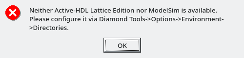
- According to https://www.latticesemi.com/en/Support/AnswerDatabase/3/9/2/3923 Active-HDL Lattice Edition is included in the Free subscription but is only supported on Windows.
- http://www.latticesemi.com/en/Support/AnswerDatabase/2/5/5/2558 has some tips and https://discourse.tinyfpga.com/t/lattice-diamond-help/67/4 also
- Check that the environment variable
LM_LICENSE_FILEpoints to the correct license file - Make sure that
license.datis placed in\lscc\diamond\license - Make sure that you don’t have several
license.datlying around: search for alllicense.datfiles, delete all of them and copy thelicense.datin your mail to\lscc\diamond\license.
Create a New Project
Go to File > New > Project
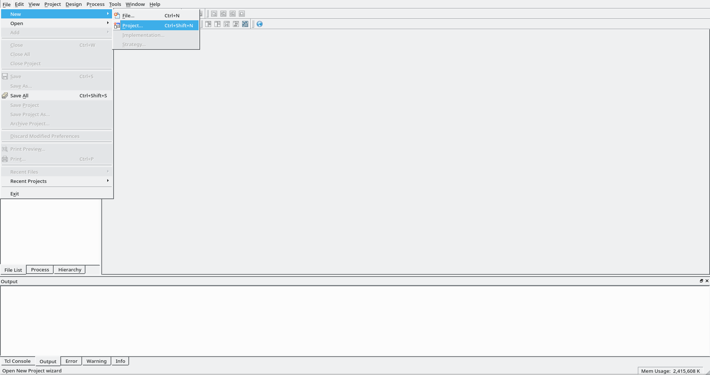
In the new windows, hit Next then choose a (cool) name and a (equally cool) location for your project:
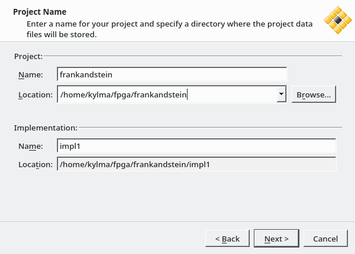
No source file yet, just hit Next
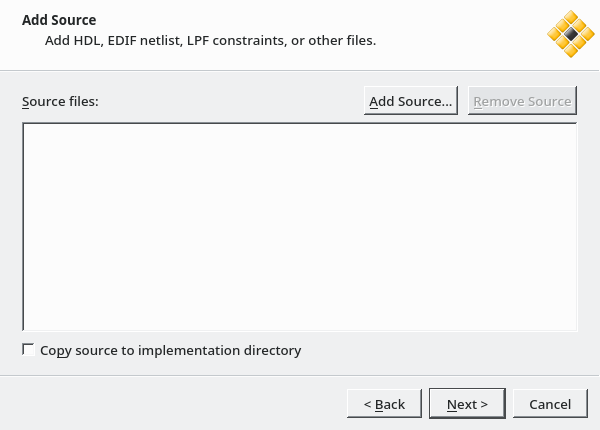
Select the device for your project. My board uses a LCMXO2-1200HC-4SG32C FPGA, so:
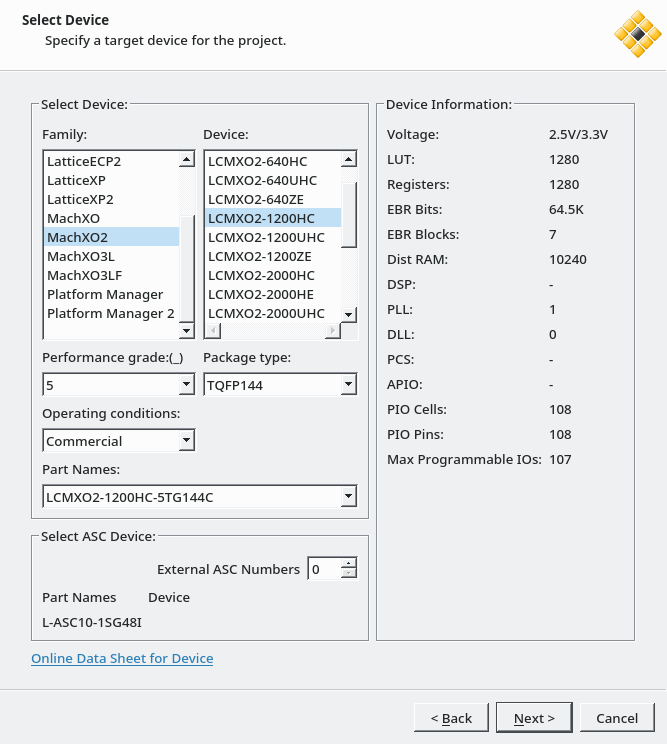
Leave the default synthesis tool and hit Next:
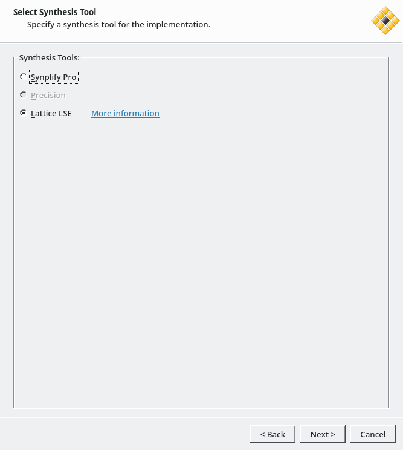
Hit the last button, a Finish to create your project at last!
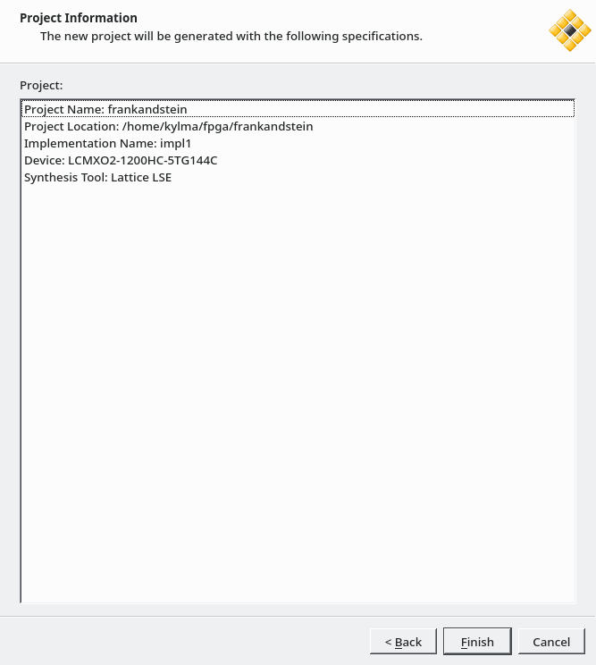
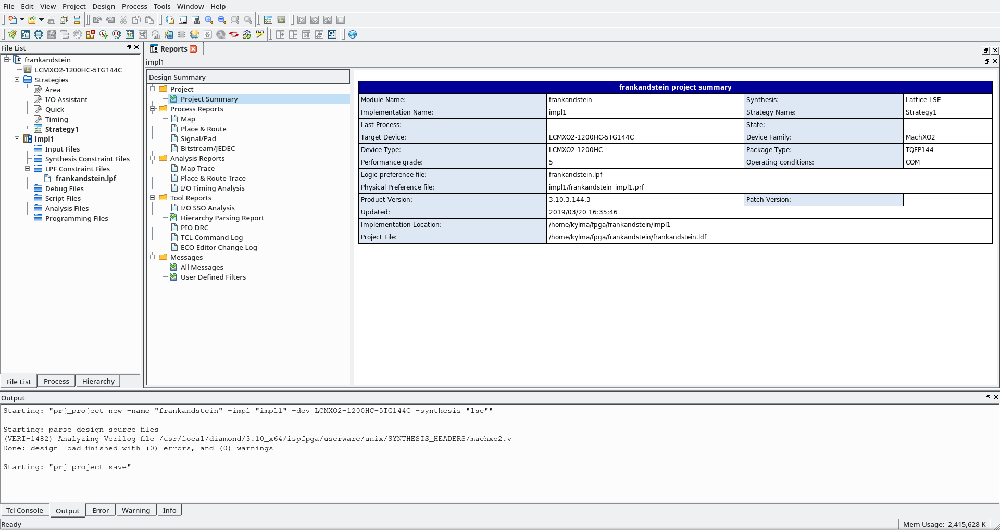
Write the Verilog Code
Create a new code file with File > New > File
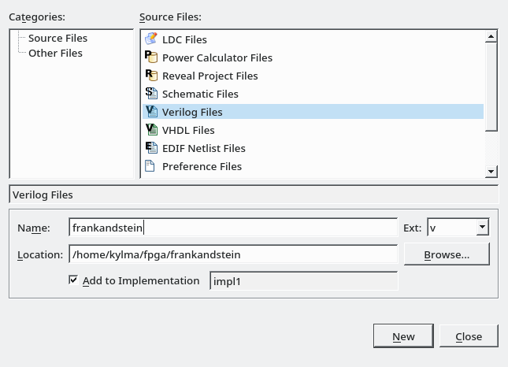
FrankANDstein is not a very original logic gate, it copies everything from her big sister the AND gate, hence the truth table is the same:
| input_1 | input_2 | and_result |
|---|---|---|
| 0 | 0 | 0 |
| 0 | 1 | 0 |
| 1 | 0 | 0 |
| 1 | 1 | 1 |
The AND gate has two input parameters: input_1 and input_2 and one output: and_result. The result is 1 only when both inputs are 1.
Step 1: Declaring a Module!
The module is a basic building block in Verilog, similar to a function in C. Like a funtion, it has inputs and outputs. Let’s declare a module named frankandstein, which has 2 inputs and 1 output:
module frankandstein(input_1, input_2, and_result);
input input_1;
input input_2;
output and_result;
// CODEME: where's the module logic?
endmodule
note 1: there is a shorter syntax to declare a module, but I’m focusing on readability.
note 2: if you’re coming from C like me, you might be itchy at seeing the
endmoduleline without a terminating>;. Alas, you’ll have to get used to it, asendmodule;will trip some Verilog parsers as invalid syntax, for > example in Lattice Diamond:
ERROR - frankandstein.v(10,11-10,12) (VERI-1137) syntax error near ;
Step 2: Module Logic
As the truth table illustrates, the output of our AND gate should be 1 only when both inputs are equal to 1. Let’s add that logic to our module and replace our previous comment:
module frankandstein(input_1, input_2, and_result);
input input_1;
input input_2;
output and_result;
assign and_result = input_1 & input_2;
endmodule
Tadaaa, our module is complete! Well, at least, theoretically.
The Lattice Diamond editor checks the code while it’s being written and will display error messages -if any- in the output panel at the bottom of the window.
Synthetization
Click on the Process tab :
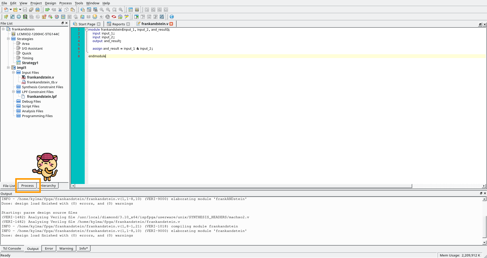
Then double-click synthesize design to synthesize the code and ensure that you have no errors.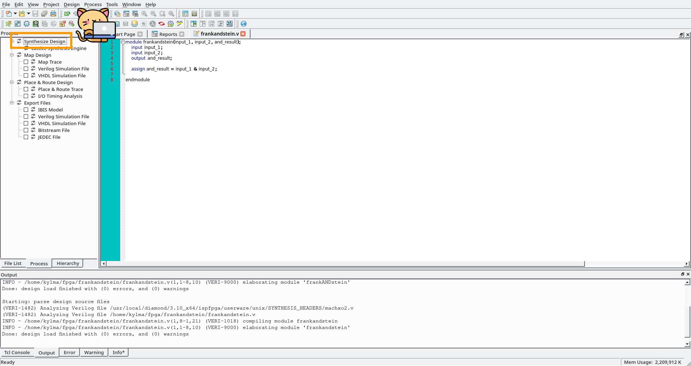
If all goes well, you should have green checks in front of Synthesize Design :
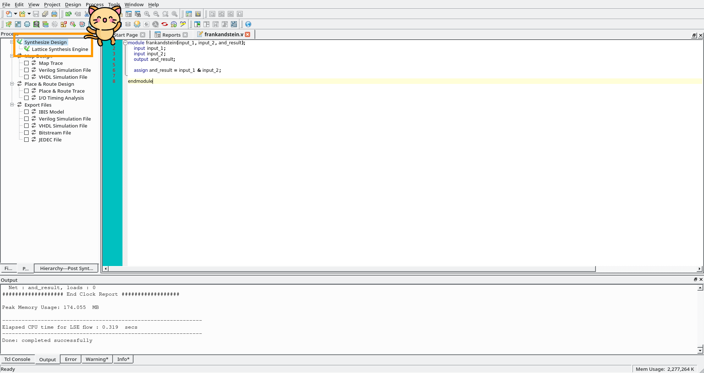
Testbench and Simulation
Synthesizing Verilog and mapping it into hardware is a very costly (and long) step. We should ensure our module works correctly before wasting time trying to synthesize it!
This is where testbench and simulation appear!
Your code didn’t work like you wanted on the first try? (It rarely does anyway…) Simulator allows you to look at what’s going on, look at the signals waveforms without any expensive equipment to perform it on real hardware.
And to go with it, you need a testbench, ie you need to write a bunch more of Verilog lines. A testbench file will instantiate the module and provide funny inputs to it (well, the ones you define really, I hope they are funny). The testbench can then be run through a simulator.
Note: code for the testbench will not be synthesized, which allow us to use code we couldn’t use normally in FPGA code (also called non-synthesizable code).
Create a new benchtest file with File > New > File
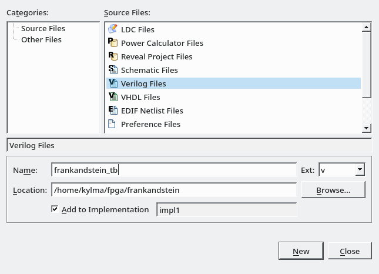
module frankandstein_tb;
// variables
wire w_and_result;
reg r_input_1, r_input_2;
// module instance
frankandstein FRANKANDSTEIN_INSTANCE ( .input_1(r_input_1), .input_2(r_input_2), .and_result(w_and_result) );
initial
begin
$monitor(r_input_1, r_input_2, w_and_result);
r_input_1 = 1'b0;
r_input_2 = 1'b0;
#5
r_input_1 = 1'b0;
r_input_2 = 1'b1;
#5
r_input_1 = 1'b1;
r_input_2 = 1'b0;
#5
r_input_1 = 1'b1;
r_input_2 = 1'b1;
$finish;
end
endmodule // frankandstein_tb
This test file instantiates a frankenstein module and then provides it with all the possible inputs: 0 and 0, 0 and 1, 1 and 0 and finally 1 and 1.
Check that frankandstein.v is marked for Synthesis and Simulation and mark frankandstein_tb.v for Simulation only. In the file tab:
Right click on frankandstein.v > Include for > Synthesis and Simulation
Right click on frankandstein_tb.v > Include for > Simulation
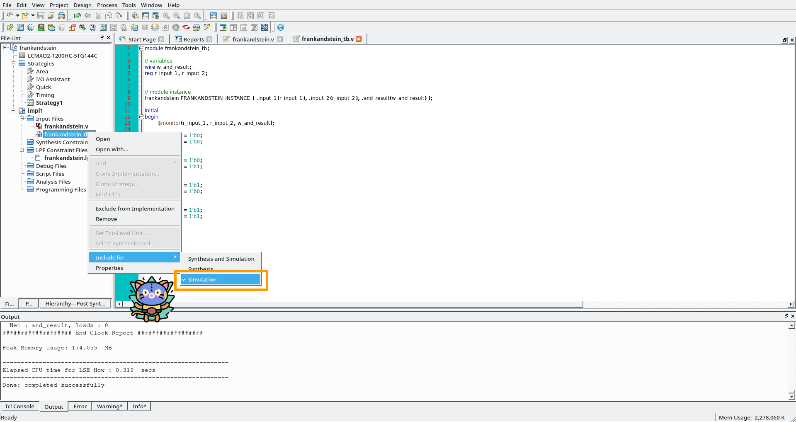
Run the simulation with: Tools > Simulation Wizard Next
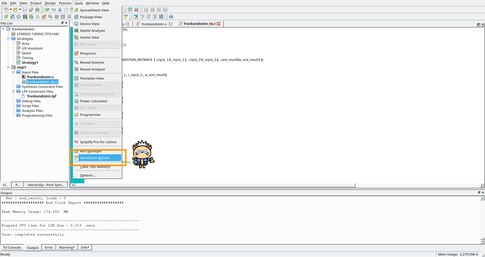
You can just click next, next, next, next, finish until a new window with Active HDL opens. Then run the simulation by clicking the play button.
/!\ You need to add the waveforms before running the simulation. Otherwise you’ll need to restart the simulation and run it again.
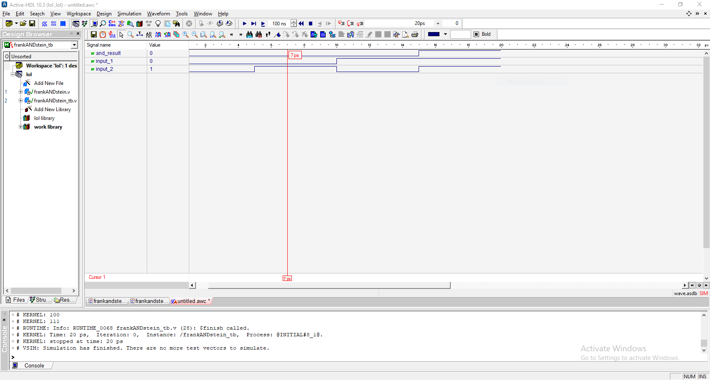
Tadaaa, there is our waveform for the AND gate |o|
Resources
http://electrosofts.com/verilog/introduction.html
https://www.nandland.com/verilog/tutorials/tutorial-introduction-to-verilog-for-beginners.html
https://github.com/securelyfitz/WTFpga/blob/master/wtfpgamanual.pdf